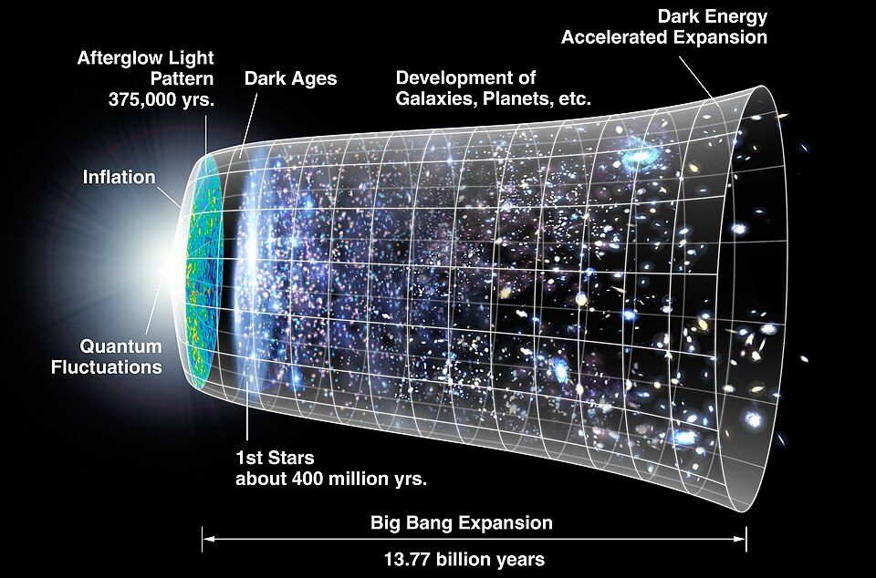

Universe · 5 articles
Cosmology
The origin, expansion, make-up and fate of the universe, explained clearly: from the Big Bang to dark energy.
Cosmology is the science of the universe as a whole: how it began, what it is made of, how it has changed and what lies ahead. In barely a century we have gone from believing the universe was eternal and unchanging to measuring its age to within less than 1%.

The Big Bang13.8 billion years ago, the entire observable universe was packed into an incredibly dense, hot state. This is how it all began.- The cosmic microwave backgroundThe oldest light in the universe, released 380,000 years after the Big Bang, still reaching us from every direction.
 The expanding universeGalaxies are moving apart because space itself is stretching. And for the last 5 billion years, ever faster.
The expanding universeGalaxies are moving apart because space itself is stretching. And for the last 5 billion years, ever faster. Dark matter and dark energy95% of the universe is something we neither see nor understand: invisible matter that holds galaxies together and energy that speeds up the expansion.
Dark matter and dark energy95% of the universe is something we neither see nor understand: invisible matter that holds galaxies together and energy that speeds up the expansion. The fate of the universeBig Freeze, Big Rip or Big Crunch? How it could all end, a very, very long time from now.
The fate of the universeBig Freeze, Big Rip or Big Crunch? How it could all end, a very, very long time from now.